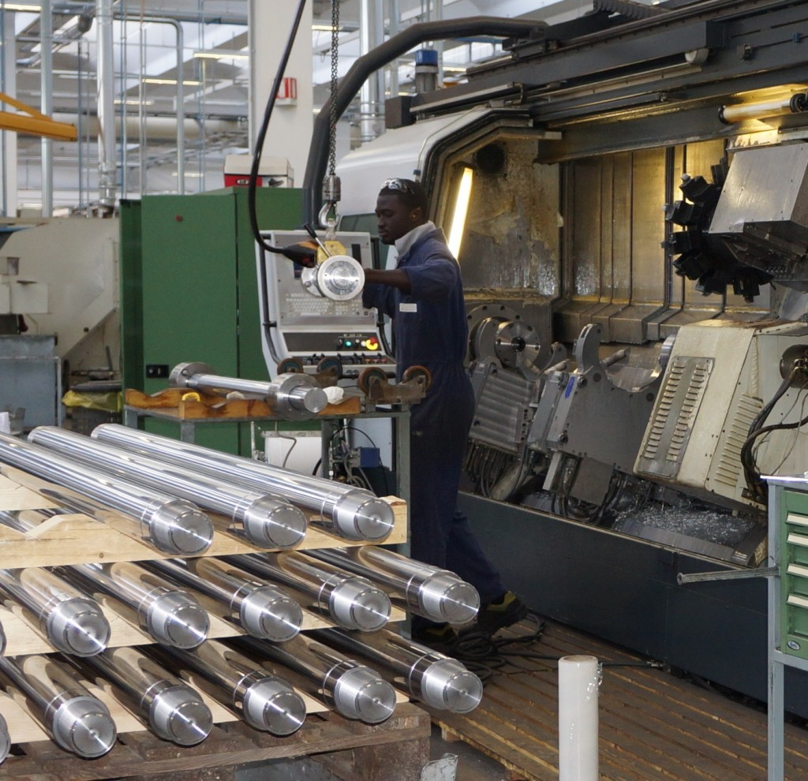

La personalizzazione di qualità.
La OLEODINAMICA PANNI, fondata nel 1968 da Giovanni Panni, è una realtà consolidata a livello mondiale nella progettazione e realizzazione di cilindri oleodinamici a semplice e doppio effetto. Nel corso degli anni, l’azienda si è specializzata soprattutto nella produzione di cilindri personalizzati.
Idee innovative per organizzazione e tecnologia di primo livello.
L’accurata organizzazione delle linee produttive – pianificata ed eseguita in condizioni controllate – ha fatto della PANNI un’azienda di riferimento leader per i settori delle macchine movimento terra, veicoli industriali, agricoltura, nonché per l’edilizia, il settore minerario e gli impianti industriali. I cilindri prodotti raggiungono pressioni di lavoro fino a 500 bar, corse fino a 12000mm, alesaggi fino a 1000mm: caratteristiche uniche, in grado di soddisfare una clientela tanto sofisticata quanto in continua evoluzione.
PANNI si distingue per la costruzione fatta su misura, con materiali della migliore qualità e con caratteristiche speciali.
Il risultato conseguito in questi anni di successi è dovuto all’impegno di tutto lo staff aziendale nella direzione della massima soddisfazione di ogni cliente, attraverso la personalizzazione dei cilindri sulle sue specifiche richieste.
I cilindri con sistemi di frenatura e con sensori di posizioni caratterizzano il livello di know-how che l’azienda, attraverso un costante lavoro di ricerca e aggiornamento tecnico, ha acquisito negli anni, fino ad imporsi come una realtà di primo piano nel suo settore.
PANNI, un’azienda fatta di persone al tuo servizio.

Oleodinamica Panni S.r.l.
Via Don Domenico Valente, 5 – 35013 Cittadella (PD) – Loc. Santa Croce Bigolina
Tel. +39 049 9448900 – Fax +39 049 9448909
info@panni.com
www.panni.com